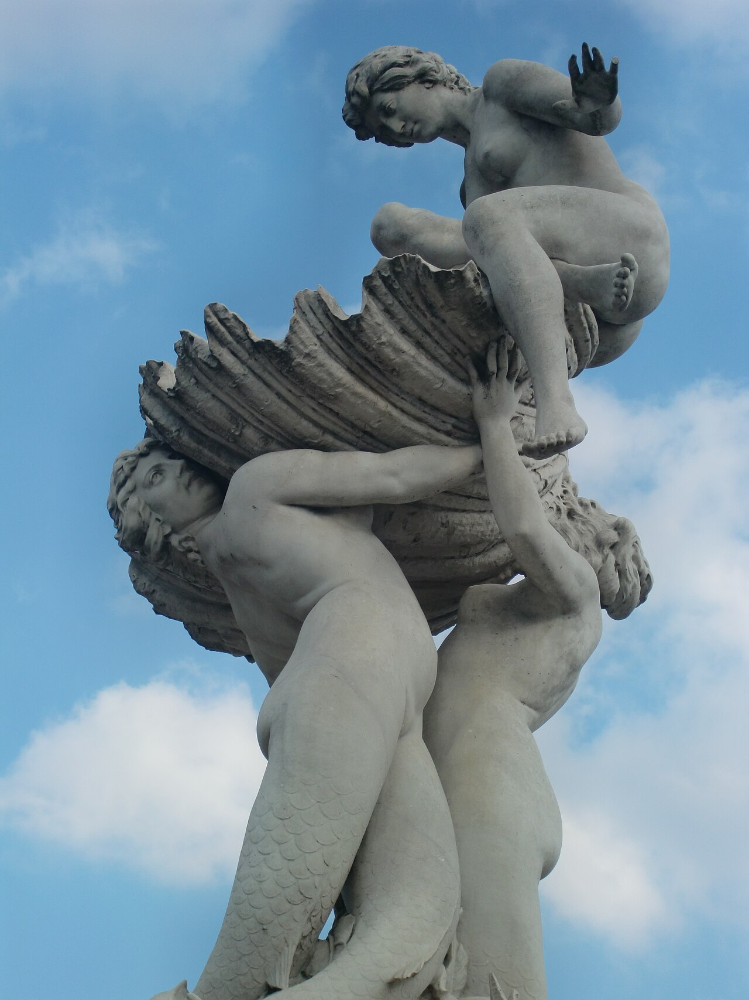
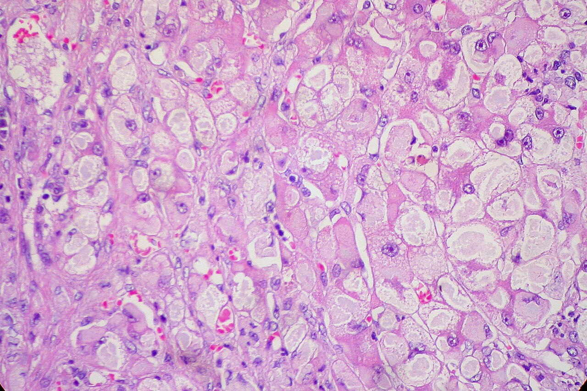
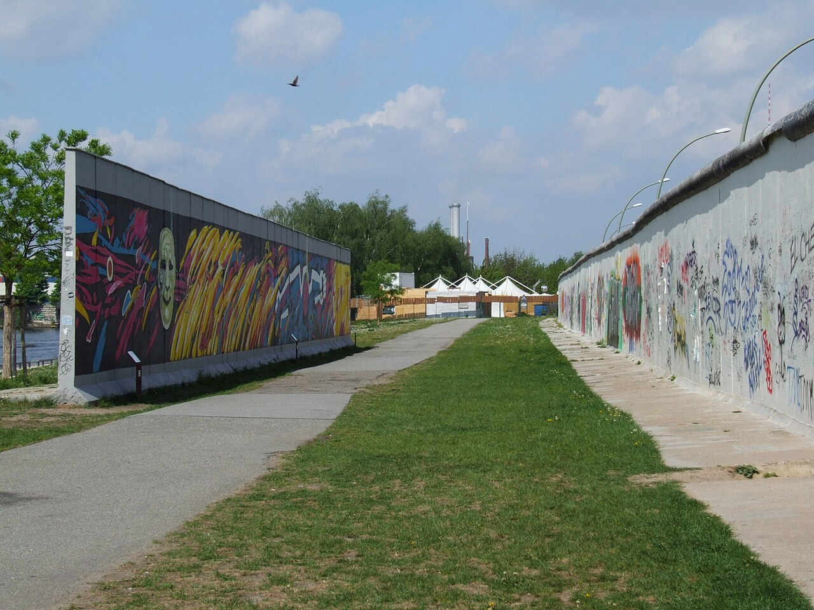

Lula.
diario de la mañana — el mundo, tu ciudad y lo que te asombra

Buen día, y feriado: el decreto 1103/2026 declaró feriado nacional el lunes 9 por la visita del Papa. Día espléndido para quedarse afuera: de 14° a 25°, despejado y sin lluvia. A las 11:30 es la misa en el Monumento de los Españoles. Y la ciencia de hoy es grande: una sola infusión que apaga para siempre un gen del hígado y baja los lípidos de forma duradera.
- El mundo en cinco minutos3'
- Argentina y Buenos Aires2'
- Ciencia: apagar un gen de una sola vez7'
- Mirá a tu alrededor2'
- Receta de estación2'
- La palabra del día1'
- Le français du matin2'
- English corner3'
- Lunes de arte: Lola Mora4'
- Hoy en la historia · un lugar2'
- Lo que me asombra hoy1'
- Pasatiempo: sudoku fácil10'
- Cuaderno: repaso, quiz y escritura4'
El Papa ya está acá: hoy, la misa del Monumento
León XIV aterrizó ayer a las 16:30 en Aeroparque y arrancó con un homenaje a San Martín en la plaza que lleva su nombre, una reunión con el presidente Javier Milei en la Casa Rosada y un encuentro con autoridades, sociedad civil y cuerpo diplomático en el Palacio Libertad, donde dio uno de los discursos centrales del viaje. Hoy la agenda arranca temprano en el Pequeño Cottolengo Don Orione de Claypole, sigue con la misa de las 11:30 en el Monumento de los Españoles y cierra con el encuentro con el mundo del trabajo en la UCA y una reunión con líderes religiosos.
Qué mirar: en estos viajes, lo que queda no son las misas sino los gestos de agenda: a quién recibe, a quién visita, en qué orden. Un papa que empieza por un hogar de personas con discapacidad en el conurbano y termina el miércoles en una cárcel está diciendo algo, aunque no lo diga.
Y además: mañana martes el Papa va a Córdoba —misa a las 10 en la Escuela de Aviación— y vuelve para la vigilia con jóvenes; el miércoles visita el penal de Devoto y cierra con la misa en Luján. El resto del mundo sigue girando: la semana trae datos de inflación en Estados Unidos y el arranque de la temporada de resultados de las grandes tecnológicas asiáticas.
Semana corta: hoy es feriado y los bancos no abren hasta el miércoles
Por el decreto 1103/2026, hoy es feriado nacional en todo el país. Sumado al Día del Bancario del viernes y al feriado bancario del martes dispuesto por el Banco Central, los bancos no atienden al público desde el viernes 6 hasta el martes 10 inclusive: vuelven el miércoles 11. Si tenías algo que hacer en ventanilla, ya sabés.
Qué queda abierto: el home banking, las transferencias inmediatas y las billeteras funcionan normalmente; lo que no corre son las acreditaciones que dependen de días hábiles —cheques, plazos fijos que vencen, débitos automáticos—, que se corren al miércoles. Y ojo con los vencimientos de tarjetas: un feriado no los anula, solo los desplaza.
El telón de fondo sigue siendo el de la semana pasada: el riesgo país cerró el viernes en torno a los 930 puntos, máximo del año, con el dólar minorista del Banco Nación en $1.570. Con el mercado local cerrado hasta el miércoles, los precios que se muevan estos días van a ser los de afuera.
Para hacer en la ciudad
- Evitá el centro y Palermo entre las 9 y las 14: la misa del Monumento de los Españoles corta Libertador y Sarmiento, y el operativo es grande.
- Plan de feriado tranquilo: la Costanera Sur, que además es donde está la fuente de hoy, y la Reserva Ecológica al lado. Llevá agua.
Una sola infusión que apaga un gen del hígado, para siempre
De qué estamos hablando: casi toda la medicina cardiovascular es crónica. Tomás la estatina todos los días durante treinta años, y si dejás, los lípidos vuelven. La idea de este trabajo de Nature es otra: en lugar de inhibir una proteína todos los días, apagar el gen que la fabrica —una vez— en el órgano donde importa. El blanco es ANGPTL3, y la herramienta es un editor de bases.

Quién es quién
- ANGPTL3: una proteína que fabrica el hígado y que frena a dos enzimas que limpian la sangre de grasas, la lipoproteína lipasa y la lipasa endotelial. Menos ANGPTL3 significa más limpieza: bajan los triglicéridos y el colesterol LDL.
- La prueba de que funciona ya existía: hay personas que nacen con las dos copias del gen rotas —hipolipidemia familiar combinada— y tienen lípidos bajísimos, sin enfermedad aparente y con menos riesgo cardiovascular. La naturaleza hizo el experimento antes.
- Editor de bases de adenina (ABE): no corta las dos hebras del ADN como un CRISPR clásico. Es una Cas modificada que no corta, fusionada a una enzima que transforma químicamente una A en una G en una ventanita de pocas bases. Al cambiar una letra se puede destruir un sitio de splicing y dejar el gen inservible, sin roturas de doble cadena y sin depender de la reparación celular.
- LNP con GalNAc: la nanopartícula lipídica que lleva el ARN mensajero del editor y el ARN guía, decorada con N-acetilgalactosamina, un azúcar que reconoce un receptor presente casi exclusivamente en los hepatocitos. Es la dirección postal: hace que el paquete baje en el hígado y no en otro lado.
Qué encontraron
- Un solo curso de tratamiento, por infusión, produce una inactivación duradera y selectiva del hígado de ANGPTL3, con la consiguiente baja de lípidos.
- La edición es química, no quirúrgica: el editor introduce un cambio de un par de bases en el sitio blanco, sin romper la doble hebra.
- Especificidad: en células hepáticas humanas en cultivo, no detectaron edición fuera de blanco en ninguno de los unos 3.000 sitios candidatos evaluados.
- Por qué entusiasma: si una sola dosis reemplaza un tratamiento diario de por vida, cambia la ecuación entera de la prevención cardiovascular, sobre todo en personas con hipercolesterolemias graves que hoy no llegan a su objetivo con nada.
Lectura crítica
- Primero, lo obvio: es irreversible. Una pastilla se deja de tomar; una edición genómica no se deshace. Eso vuelve la seguridad a largo plazo mucho más exigente que para una droga convencional.
- «Sin edición fuera de blanco detectable» no es «sin edición fuera de blanco». Depende de los 3.000 sitios que elegiste mirar y de la sensibilidad del método. Lo que buscan los reguladores es también la edición en sitios no predichos y el mosaicismo a largo plazo.
- Cuidado con la pregunta que no responde: bajar lípidos es un subrogante. Lo que importa es si previene infartos, y eso solo lo contesta un ensayo grande con años de seguimiento.
- Yo no vi el texto completo, así que no puedo decirte si los datos son de animales, de humanos o de las dos cosas, ni los porcentajes de reducción. Si lo vas a citar, fijate eso primero: cambia por completo cómo se lee.
La conexión con lo que estudiás
Acá están las dos materias juntas y bien visibles. Ingeniería genética: el editor de bases es la generación siguiente del CRISPR que viste en clase, y vale entender por qué es distinto —no corta, no necesita reparación homóloga, y por eso tiene otro perfil de riesgo—. Y biotecnología farmacéutica: el verdadero cuello de botella de la terapia génica nunca fue la edición, fue la entrega. El GalNAc es un truco elegante de química de carbohidratos que convierte un tratamiento sistémico en uno de órgano. Si te interesa este campo, la pregunta profesional no es «qué gen edito» sino «cómo llego solo ahí».
«In Vivo CRISPR Base Editing of ANGPTL3 for Durable Lipid Lowering». Nature, 6 de noviembre de 2026, doi:10.1038/s41586-026-11233-9
Biotec en el mundo real · El Laboratorio de Hemoderivados de la UNC
En Córdoba —donde el Papa está mañana— funciona una rareza mundial: una planta de hemoderivados dentro de una universidad pública, la de la Universidad Nacional de Córdoba.
- Qué hace: fracciona plasma humano donado y lo convierte en medicamentos: albúmina, inmunoglobulinas, factores de coagulación. Es el único laboratorio del país que lo hace a escala industrial y cumple normas GMP.
- Cómo: el método clásico es el fraccionamiento de Cohn: se separan las proteínas del plasma jugando con etanol frío, pH, fuerza iónica y temperatura, porque cada proteína precipita en condiciones distintas. Después vienen cromatografías de pulido, inactivación viral (solvente-detergente, nanofiltración, pasteurización) y liofilización.
- Por qué importa: el plasma es un recurso limitado que depende de donantes, y un país que no fracciona depende de importar. Para una persona con hemofilia o con una inmunodeficiencia, esa diferencia es el tratamiento o la falta de tratamiento.
- Salida laboral: purificación de proteínas a escala, validación de procesos, control de calidad biológico, seguridad viral, regulatorio.
Ciencia en la vida cotidiana · Por qué no existe el colesterol «bueno» y el «malo»
El colesterol es una sola molécula. Lo que cambia es el micro que lo lleva. Como es insoluble en agua, viaja dentro de lipoproteínas: partículas con un núcleo de grasas y una cubierta de fosfolípidos y proteínas. Las LDL lo reparten desde el hígado a los tejidos, y si hay muchas y circulan mucho tiempo, se cuelan en la pared arterial, se oxidan y arrancan la placa. Las HDL hacen el camino inverso, el «transporte reverso». De ahí lo de bueno y malo: no es el colesterol, es el vehículo.
El dato que sirve: la metáfora se rompe en los detalles, y eso explica un fracaso famoso. Subir el HDL con drogas no redujo los infartos en los grandes ensayos, mientras que bajar el LDL los reduce siempre, por cualquier mecanismo: estatinas, ezetimibe, anticuerpos anti-PCSK9 o, ahora, edición génica. El HDL alto parece ser más un marcador de que todo anda bien que una causa de que ande bien.
El pindó, la palmera que es nuestra, y el cuervillo

-4026.jpg){kind=link}
El árbol: pindó
| Nombre científico | Syagrus romanzoffiana (Arecáceas). Nativa del noreste argentino, Paraguay, Uruguay y el sur de Brasil. En Buenos Aires está plantada en plazas, patios y avenidas. |
|---|---|
| Cómo reconocerla | Tronco gris liso, hojas pinnadas —de pluma, no de abanico como la palmera washingtonia— y folíolos que salen del raquis en distintos planos, lo que le da ese aspecto despeinado. De los racimos cuelgan cientos de cocos anaranjados del tamaño de una aceituna. |
| Lo asombroso | Esos frutos son una central de alimento urbano: los comen loros, zorzales, murciélagos y, en el campo, carpinchos y pecaríes. Y la palmera tiene un truco: su «madera» no crece en anillos como la de un árbol. Las palmeras son monocotiledóneas y no tienen cámbium: el tronco se forma de una vez, engrosando en la base antes de elevarse, y por eso una palmera adulta nunca se vuelve más gruesa. |
El ave: cuervillo de cañada
| Nombre científico | Plegadis chihi (Tresquiornítidos, la familia de los ibis). De cuervo no tiene nada. |
|---|---|
| Cómo reconocerlo | Oscuro de lejos y metálico de cerca: con sol se le ven reflejos verdes, bronce y violeta. Pico largo, curvo hacia abajo. Vuela en bandadas en formación, con el cuello estirado, y se los ve en la Reserva, la Costanera y los bañados del conurbano. |
| Lo asombroso | El pico curvo es un instrumento de búsqueda táctil: lo clava en el barro y detecta la presa por el tacto, sin verla, gracias a corpúsculos sensoriales en la punta. Por eso puede alimentarse de noche o en agua turbia, donde una garza —que caza con la vista— no puede hacer nada. Dos aves del mismo humedal, repartiéndose el trabajo por el sentido que usan. |
Limonada de jengibre y menta
Diez minutos y una jarra para el feriado. Con dos maneras de hacerla y una diferencia que se nota.
Ingredientes
- 1 litro de agua
- Jugo de 4 limones (y la cáscara de uno, sin lo blanco)
- Un trozo de jengibre fresco de 5 cm, en rodajas finas
- 3 cucharadas de azúcar o miel
- Un puñado de menta fresca, hielo
Pasos
- Herví 200 ml de agua con el jengibre y el azúcar, 5 minutos. Dejá enfriar.
- Mezclá con el resto del agua fría y el jugo de limón colado.
- Agregá la cáscara y la menta sin machacar, solo palmeándola entre las manos.
- Heladera, una hora. Colá, serví con hielo.
La química de la receta
Por qué el jengibre va en caliente: su picor viene del gingerol, que se extrae mejor a temperatura alta. Y con el calor parte del gingerol se deshidrata y pasa a shogaol, bastante más picante: por eso el jengibre cocido pica distinto del crudo.
Por qué la menta no se machaca: porque las hojas guardan el mentol y sus aromáticos en glándulas superficiales que se rompen con solo frotarlas. Si las aplastás, además rompés las células del interior y liberás clorofila y compuestos amargos, y encima activás enzimas que oxidan todo y lo ponen marrón. El golpecito con la palma alcanza: querés el aroma de afuera, no el jugo de adentro.
Y la cáscara en frío: los aceites esenciales del limón —limoneno sobre todo— son volátiles y se van con el calor. En frío se extraen despacio pero quedan. Por eso la mejor limonada lleva el jugo y la cáscara en frío, y la parte cocida solo para lo que necesita calor. Dos extracciones distintas en la misma jarra.
canon sustantivo
semítico qaneh (caña) → griego kanṓn (vara recta, regla) → latín canon → castellano canon · francés canon · inglés canon
Empezó siendo un objeto: una caña recta, la vara que usaba el carpintero para trazar una línea derecha. De ahí pasó a significar «regla» en sentido abstracto, y de ahí a todo lo demás. En escultura, el canon es la proporción ideal del cuerpo —Policleto fijó el suyo en siete cabezas y media de altura, y escribió un tratado llamado justamente así—. En música, un canon es una melodía que se persigue a sí misma según una regla. En religión, el canon es la lista de libros aceptados; en literatura, la lista de obras que hay que haber leído. Y en derecho canónico, la norma.
En biología lo usamos todo el tiempo sin pensarlo: una secuencia canónica es la versión de referencia de un gen o una proteína, la que está en la base de datos. Y cuando decimos que una vía señaliza «por la vía canónica» queremos decir «por la que está en el libro». Vale tener presente de dónde viene la palabra: el canon no es la verdad, es la vara con la que alguien decidió medir. En la base de datos hay una secuencia canónica porque hubo que elegir una, no porque la célula tenga preferencias.
Qu'est-ce que vous faites dans la vie ?
— Qu'est-ce que vous faites dans la vie ?
— Je suis étudiante. J'étudie la biotechnologie.
— C'est intéressant ! Vous êtes en quelle année ?
— En dernière année. Je finis cette année.
| qu'est-ce que vous faites ? | ¿a qué se dedica? [kes-ke vu FET] |
|---|---|
| je suis étudiante | soy estudiante [she sui-ze-tü-DIANT] |
| j'étudie… | estudio… [she-tü-DÍ] |
| en dernière année | en el último año [an der-NIER a-NE] |
Un truco
Una diferencia que sorprende: con las profesiones, el francés no usa artículo. Se dice je suis étudiante, je suis biotechnologiste, elle est médecin — nunca une étudiante ahí. Y médecin no cambia de forma para el femenino en el uso tradicional, aunque hoy se escucha cada vez más une médecine o une docteure en Canadá y Bélgica. Si te preguntan y no sabés el nombre exacto de tu carrera, siempre podés escaparte con je travaille dans la recherche (trabajo en investigación).
The trouble with a cure
A one-off treatment that works for life is, from a patient's point of view, obviously preferable to a daily pill. From the point of view of the industry that must pay to develop it, it is a far more awkward proposition. A chronic medicine earns revenue for as long as the patient keeps taking it; a cure earns once and then removes its own market. This is not cynicism — it is arithmetic that any board will do before committing a billion dollars.
The usual fix is to charge for the lifetime of benefit up front, which produces the eye-watering list prices that gene therapies carry and the predictable objection that no health system can absorb them. Various workarounds exist: paying in instalments, refunds if the effect wears off, subscription deals in which a government buys unlimited access for a fixed sum. None has yet become standard, and several therapies have been withdrawn from markets not because they failed but because nobody could agree on how to pay.
What makes this worth noticing is that the obstacle is no longer scientific. We are approaching a position where the hard part of curing a disease is the contract.
- one-off — de una sola vez, único
- a proposition — una propuesta, un planteo
- revenue — ingresos
- eye-watering — escandaloso, que hace llorar (por lo alto)
- to absorb a cost — absorber un costo
- a workaround — un rodeo, una solución de compromiso
- in instalments — en cuotas
- to wear off — pasarse el efecto
Lola Mora: la escultora que la ciudad mandó a mudar
Dolores Mora de la Vega (1866-1936), tucumana, estudió en Roma con una beca del gobierno argentino y volvió convertida en la primera escultora profesional del país. En 1903 instaló en la Plaza de Mayo, al pie de la Catedral, la Fuente de las Nereidas: un grupo de mármol de Carrara con Venus emergiendo de una caracola, rodeada de nereidas y tritones desnudos. El escándalo fue inmediato. Cinco años después la fuente fue desmontada y llevada lejos del centro, a la Costanera Sur, donde sigue.
Qué mirar
- El material y la escala. Mármol de Carrara, tallado por ella en Roma y traído en barco. No es una escultura decorativa: son figuras de tamaño mayor que el natural y un grupo pensado para verse desde cualquier ángulo, con el agua como parte de la obra.
- El movimiento en espiral. Las figuras se enroscan hacia arriba siguiendo una diagonal: Venus arriba, los tritones empujando desde abajo. Es composición barroca, no neoclásica, y por eso la fuente «sube» cuando la mirás de frente.
- Dónde estaba y dónde está. Pensala en su lugar original, pegada a la Catedral y a la Casa Rosada. El escándalo no fue solo por los desnudos: fue por el desnudo ahí, y hecho por una mujer, en un país donde la escultura pública era un oficio exclusivamente masculino.
- Lo que vino después. Siguió trabajando —relieves y monumentos en varias provincias—, incursionó en minería y en cine, y murió en Buenos Aires en la pobreza, casi olvidada.
La fuente se mudó dos veces y sigue dando pelea: hoy está en la Costanera Sur, con la Reserva detrás, y es uno de los pocos monumentos de la ciudad que mejora de noche.
Un detalle que vale como clase: la obra no se censuró formalmente, se la «trasladó por razones urbanísticas». Mudar lo incómodo en vez de prohibirlo es una técnica que se sigue usando, y conviene reconocerla.
9 de noviembre de 1989: cae el Muro de Berlín
Lo más asombroso del final del Muro es que fue, en buena medida, un error administrativo. La tarde del 9 de noviembre, el vocero del régimen de Alemania Oriental, Günter Schabowski, leyó en conferencia de prensa un borrador de nuevas reglas de viaje que ni él había terminado de leer. Un periodista preguntó desde cuándo regían. Schabowski revisó los papeles, dudó y contestó: «hasta donde sé, de inmediato, sin demora». Esa frase salió por televisión y miles de berlineses fueron a los pasos fronterizos. Los guardias no tenían órdenes. Cerca de las once de la noche, en Bornholmer Strasse, un oficial decidió por su cuenta abrir la barrera.
No hubo un solo disparo esa noche. El muro que había matado a más de un centenar de personas en veintiocho años cayó porque nadie quiso ser el que diera la orden de impedirlo.
El lugar: Berlín

| Dónde | Sobre el río Spree, en el noreste alemán. Durante 28 años fue dos ciudades con un mismo nombre, y el muro tenía 155 km, de los cuales solo 43 cruzaban la ciudad. |
|---|---|
| Qué quedó | Muy poco, y a propósito: la ciudad lo demolió rápido. Quedan la East Side Gallery —1,3 km pintados por artistas en 1990—, el memorial de Bernauer Strasse y una línea de adoquines dobles en el piso que marca por dónde pasaba. |
| Y la ciencia | Berlín es hoy uno de los polos científicos de Europa: el Max Delbrück Center de biología molecular, la Charité —el hospital universitario más grande del continente— y un ecosistema de biotech que creció, literalmente, sobre el trazado del muro. |
Las mejores drogas nuevas las encontraron personas que ya nacían curadas
Hay una forma de descubrir medicamentos que no empieza en el laboratorio: empieza mirando a gente rara. La lógica es simple y preciosa. Si existe una persona que nació con un gen roto y, por esa razón, tiene un rasgo que querríamos lograr con una droga —y por lo demás está sana—, entonces ya sabés tres cosas: que el blanco funciona en humanos, que apagarlo produce el efecto buscado, y que apagarlo del todo, de por vida, es tolerable. Es un ensayo clínico que la naturaleza corrió durante décadas sin que nadie lo diseñara.
El caso fundador es PCSK9. En 2005 se describieron familias con ese gen inactivado, con LDL muy bajo y muchos menos infartos; entre ellas, una mujer con las dos copias rotas, LDL de 14 mg/dl y perfectamente sana. Nueve años después ya había anticuerpos anti-PCSK9 aprobados. ANGPTL3 salió del mismo camino: primero las familias, después la droga.
Y la herramienta que lo formalizó tiene nombre: aleatorización mendeliana. Como las variantes genéticas se reparten al azar en la meiosis, comparar personas según el alelo que heredaron es casi un experimento aleatorizado que empezó en la concepción y duró toda la vida. Me asombra la economía del truco: en vez de preguntarle a un modelo animal qué pasaría si apagás un gen humano, buscás a quien ya lo tiene apagado y le preguntás cómo le fue.
El del lunes
Repaso y quiz de la mañana
Repaso de idiomas
Quiz
¿Qué hace ANGPTL3 normalmente?
Un editor de bases de adenina…
¿Para qué sirve el GalNAc de la nanopartícula?
¿Por qué la menta no se machaca?
«Canon» era originalmente…
La Fuente de las Nereidas se movió de la Plaza de Mayo porque…
La aleatorización mendeliana aprovecha que…
Escritura
- Quiz: frena a las lipasas · convierte una A en una G sin cortar · dirige la partícula al hígado · se liberan amargos y se oxida · una caña usada como regla · los desnudos, con excusa urbanística · los alelos se reparten al azar.
- Repaso: qu'est-ce que vous faites dans la vie ? · je suis étudiante · je suis en dernière année · de una sola vez · ingresos · pasarse el efecto.
- Francés: por ejemplo, «J'étudie la biotechnologie, je suis en dernière année.»
Sudoku:
Fuentes de esta edición
- La visita papal: Cronograma oficial del Episcopado · Infobae: el itinerario
- Feriados y bancos: Rankia: el decreto 1103/2026 y el feriado bancario · Los Andes
- Clima: La Nación, con datos del SMN
- Ciencia: Nature: edición de bases in vivo de ANGPTL3 · Laboratorio de Hemoderivados, UNC
- Arte e historia: Ministerio de Cultura: Lola Mora · Britannica: el Muro de Berlín
Mañana, martes: moda. — Lula.